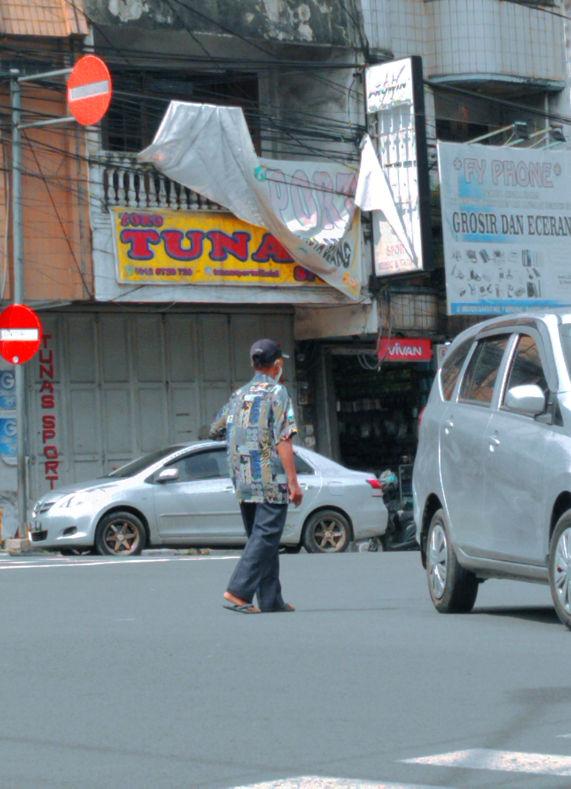

Photographer | Visual Designer
Halo, Saya Ibnu Batuta Kamil
Menyatukan estetika Desain Komunikasi Visual dengan fungsionalitas Sistem Informasi untuk mengembangkan solusi digital minimalis, cepat, dan berdampak tinggi pada bisnis.
Ibnu Batuta Kamil
Photographer | Visual Designer
Photographer | Visual Designer
Menyatukan estetika Desain Komunikasi Visual dengan fungsionalitas Sistem Informasi untuk mengembangkan solusi digital minimalis, cepat, dan berdampak tinggi pada bisnis.
Halo, saya Ibnu Batuta Kamil. Sebagai mahasiswa Sistem Informasi yang mencintai dunia street photography dan desain visual, saya tidak hanya membangun sistem yang berfungsi dengan baik, tetapi juga mengutamakan keindahan visualnya.
Pengalaman saya di PT. Bimasena Visual Indonesia dalam mengelola fotografi komersial serta produksi film dokumenter telah mengasah ketajaman estetika dan manajemen alur kerja saya di industri kreatif.
Saya percaya bahwa teknologi terbaik lahir dari penggabungan estetika DKV dan fungsionalitas Sistem Informasi. Lewat kombinasi ini, saya siap membantu bisnis menghadirkan produk digital—seperti platform web dan UI/UX—yang minimalis, berkinerja cepat, dan berdampak tinggi.
Rekam Jejak Profesional
PT Bimasena Visual Indonesia
Bertanggung jawab langsung dalam memproses visual aset kreatif industri, yang meliputi:
Showcase Karya Terbaik

Visual ArtsEksplorasi visual lanskap urban dengan tajuk "Melawan Arah, Mengikuti Hidup." Menekankan pada komposisi warna dan penceritaan lewat bingkai lensa digital.
Validasi Kompetensi

Dikeluarkan oleh: Direktur Utama PT Bimasena Visual Indonesia / Destian Andriyanto Kurniawan, S.H.
.jpg)
Dikeluarkan oleh: Kepala Sekolah SMKN 7 KOTA SERANG / Dr. Hj. Sunariah, S.Ag., M.Pd.I.
.jpg)
Dikeluarkan oleh: HMSI Universitas Pamulang Kampus Serang

Dikeluarkan oleh: Lembaga Kajian Keagamaan UNPAM Serang

Dikeluarkan oleh: SENSASI UNPAM / Eka Ramadhani Putra, S.Kom., M.Kom.
Saya terbuka untuk kesempatan magang tingkat lanjut, proyek *freelance*, atau diskusi teknologi kreatif.
Hubungi via Email.jpg)
{kind=link}